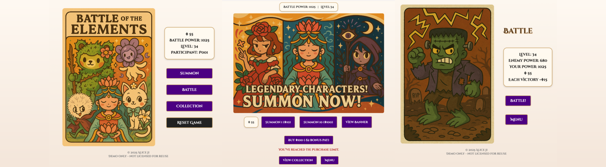
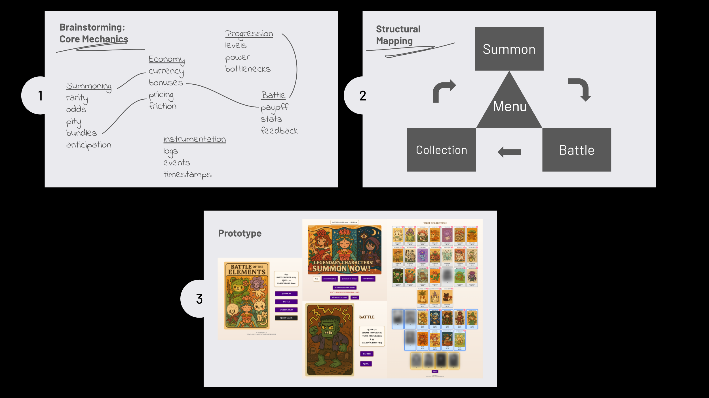

Case study
Gacha Behavioral Economics
A modular experimental platform for studying player behavior and monetization in randomized reward systems

At a Glance
- Built a fully functional gacha battle game as a reusable research instrument (not a one-off game concept)
- Separated content assets from mechanics so experiments can be reconfigured quickly
- Logged event-level behavioral telemetry (pulls, spending, progression, outcomes) for analysis
- Designed the platform to test how odds, pricing, bonuses, and framing shift trust and monetization patterns
What This Is (and Isn’t)
Mobile games increasingly rely on gacha mechanics such as randomized rewards, limited-time banners, variable odds, and currency bundles. While these systems are widely used, it is often unclear which specific design variables drive spending, which ones shape player trust, and how progression pressure interacts with randomness over time.
This project did not begin as a game concept or a monetization redesign. It began as a question about how gacha systems could be studied in a controlled way. Rather than starting from screens or aesthetics, I first decomposed the system into core mechanics including summoning, economy, progression, battle, and instrumentation.
From there, I mapped a minimal behavioral loop and built a working prototype that preserves the feel of a real gacha game while exposing its mechanics as adjustable parameters. The result is a modular, instrumented platform that can be reused across experiments by swapping assets, tuning odds, and reconfiguring progression without rebuilding the product.

Research Questions This Platform Enables
- How do pull odds and banner framing change spending acceleration and retention?
- Do bundle offers (e.g., 10-pull) create completion bias or perceived value effects?
- How do bonus gems, endowment effects, and USD → currency ratios shape purchase intent?
- When does randomness feel fun vs unfair, and how does perceived fairness affect trust?
- How does progression pressure change risk-taking and willingness to spend?
Platform Capabilities
Summoning System
- Configurable rarity tables and drop rates
- Single pull vs ten-pull mechanics
- Optional guarantees / pity rules / bonus logic
- Banner messaging and visual framing can be varied by condition
Battle & Progression Loop
- Players use summoned characters in battles
- Battle outcomes affect progression and resource needs
- Creates realistic pressure to optimize roster and power
Economy Controls
- Adjustable USD → in-game currency exchange
- Configurable pricing, bundles, and bonus currency
- Supports endowment bonuses and “free currency” framing
Instrumentation
- Event-level logs for every key action
- Timestamped state: currency, inventory, power, level
- Analysis-ready output via Apps Script → Sheets
Designed for Reuse & Reconfiguration
Modularity is a first-class feature. The platform separates content(character art, names, rarity sets) from mechanics (odds, pricing, progression tuning, banner framing), allowing rapid iteration between experimental conditions.
- Asset-agnostic: swap character sets (e.g., original cards, rarity-tiered character collections, abstract icons) without rewriting logic
- Mechanics-agnostic: adjust odds, bundle structures, and guarantees via configuration
- Economy-agnostic: change currency pricing and exchange rates independently of gacha logic
- Condition-ready: supports controlled manipulations (banner copy, odds visibility, bonus framing)
This makes it a reusable testbed for behavioral economics and game UX research—not a single “finished” design.
Behavioral Telemetry
The platform captures behavioral traces at the action level (summoning, spending, battles, and progression). This enables analysis of decision sequences and spending trajectories in addition to post-hoc self-report.
| playerId | timestamp | action | data | level | battlePower | tenPulls | addCurrencyUsed | currencyLeft |
|---|---|---|---|---|---|---|---|---|
| Alice | 2025-10-27T02:48:20.843Z | 10_pull | 1 | 96 | 1 | 0 | 0 | |
| Alice | 2025-10-27T02:48:27.260Z | add_currency | 1 | 96 | 1 | 2 | 200 | |
| Alice | 2025-10-27T02:48:37.189Z | 10_pull | 1 | 208 | 2 | 5 | 400 |
Note: The platform logs full inventory state and pull composition; the table above is a condensed excerpt for readability.
Why This Matters
Gacha economies are often tuned post-launch using observational analytics, which makes it hard to separate causality (what causes spending) from correlation (what co-occurs with spending).
This platform enables controlled, experimental testing of monetization and reward mechanics before deployment, supporting evidence-based design decisions that balance engagement with transparency and trust.
Key Takeaway
This project is a reusable testbed for studying how randomized reward systems shape behavior, built to be modular “to a fault,” so designers and researchers can swap assets, tune odds, change currency ratios, and run new conditions without rebuilding the product each time.
View Github Repo & Prototype.